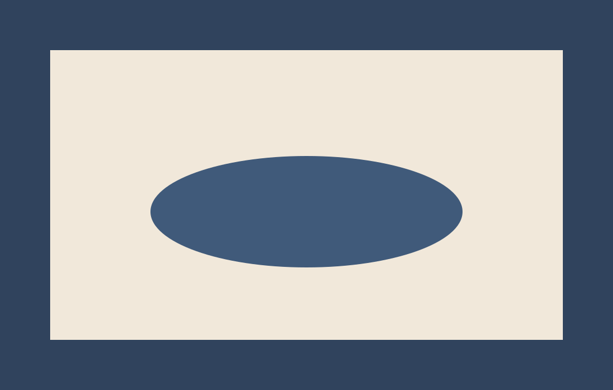
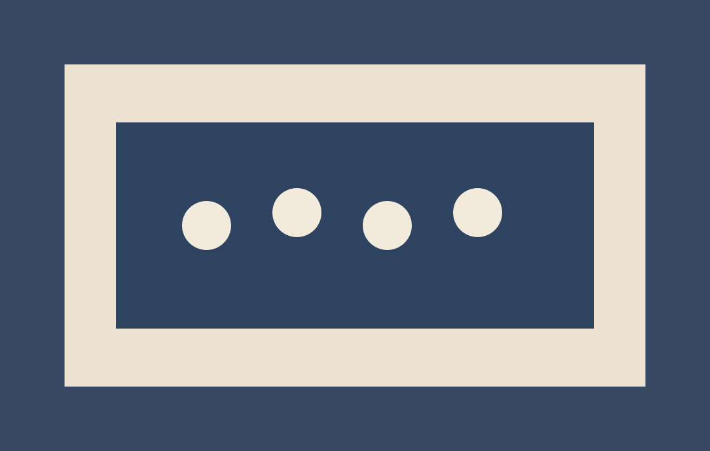

Kultuur
Keele, muusika ja loomeelu reportaažid diaspora linnadest.
Ava esinduslugu / Leitartikel lesenToimetuse deskid
Iga rubriik toimib eraldi newsroom-lõiguna, kus lood on kureeritud relevantsi, allikakvaliteedi ja kogukondliku mõju järgi.
Keele, muusika ja loomeelu reportaažid diaspora linnadest.
Ava esinduslugu / Leitartikel lesenArhiivimaterjalid, mälulood ja ajajooned.
Vaata ajalooteemat / Geschichtsthema ansehen
Esimese isiku lood, mis ühendavad identiteedi ja tänase elu.
Saada oma lugu / Eigene Geschichte senden
Geograafilised sõlmpunktid, kus kogukond kohtub ja tegutseb.
Tagasi avalehe valikutesse / Zur Startseite